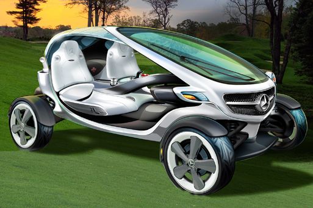
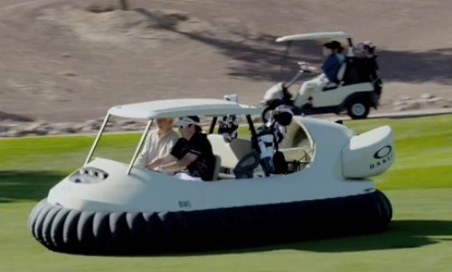

Here are our products
 According to multiple sources, two drunk guys stole this very golf cart from the Quail Hollow clubhouse, drove it five miles north to Selwyn Pub, parked it on the bar's front patio, and ordered two shots before abandoning the cart and leaving the bar undetected.
According to multiple sources, two drunk guys stole this very golf cart from the Quail Hollow clubhouse, drove it five miles north to Selwyn Pub, parked it on the bar's front patio, and ordered two shots before abandoning the cart and leaving the bar undetected.
Mercedes released design sketches of a "Vision Golf Cart", which looks less like a golf cart and more like a miniature futuristic SUV. It would be an electric car, powered by batteries that are charged by solar-panels on the roof of the vehicle, FOX News reports. Golfers sitting in either the passenger seat or the driver's seat can maneuver it using a joystick in the middle instead of a steering wheel.
 Make yourself the talk of the turf with a custom golf cart
Explore the option of a high-end, custom golf cart. Make sure to get noticed when you're out on the green for the best prices - guaranteed.
Make yourself the talk of the turf with a custom golf cart
Explore the option of a high-end, custom golf cart. Make sure to get noticed when you're out on the green for the best prices - guaranteed.
 If you want to drive a futuristic golf cart now, head to Windy Knoll Golf Club in Springfield, Ohio, where two hovercraft golf carts - endorsed by 2012 Masters Tournament winner Bubba Watson - are supposed to be available for public use, beginning this weekend. Throughout the week, the golf club has reportedly been removing trees to make room and designating lakes on the course that the vehicles - which reportedly cost $58,000 a piece - are allowed to fly over.